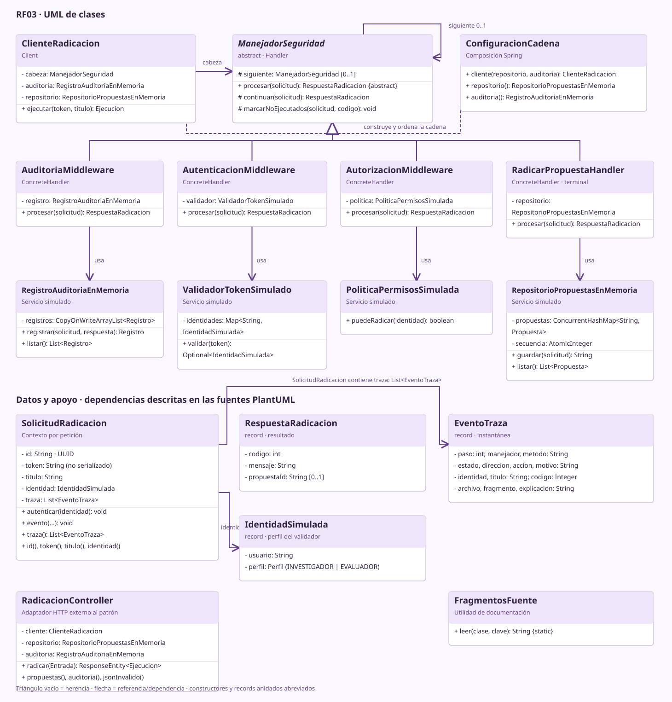
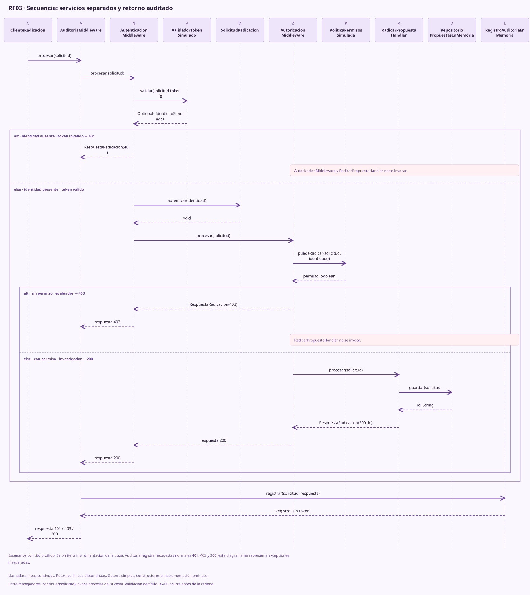

EXPLORADOR DE PASOS
La cadena comienza en el cliente
Ejecuta uno de los escenarios. Cada decisión y cada retorno aparecerán aquí.
- Decisión
- Esperando una solicitud
- Motivo
- Elige un escenario y ejecuta
- Identidad
- Sin identidad autenticada
- Propuesta
- —
ARQUITECTURA DE SOFTWARE / PATRONES DE COMPORTAMIENTO
Radica una propuesta de investigación y descubre cómo cada filtro protege el siguiente paso.
Chain of Responsibility · Java 17Java ya ejecutó la solicitud cuando llega la respuesta. Estos controles reproducen la traza recibida; no pausan el servidor.
EXPLORADOR DE PASOS
Ejecuta uno de los escenarios. Cada decisión y cada retorno aparecerán aquí.
// Los fragmentos provienen del backend.
// Se extraen de los archivos Java entregados.RESULTADO REAL DEL SERVIDOR
La reproducción no vuelve a enviar ni a guardar la propuesta.
AUDITORÍA EN MEMORIA
La pantalla reacciona al resultado real de Java. El inicio de sesión y los tickets de acceso son simulados. Un reintento sí envía una nueva solicitud a la cadena.
Ejecuta un escenario arriba para ver la respuesta de tu ERP aquí.
RECUPERAR LA SESIÓN
Sin contraseñas ni SSO. Seleccionas una credencial ficticia; Java validará la identidad al reenviar.Conservamos tu borrador. Puedes ajustar el título y volver a intentar la radicación.
Explica por qué necesitas acceso. En un ERP real esta solicitud podría ser revisada por un administrador.
TICKET FICTICIO · SOLO EN ESTA PANTALLA
—◷ Pendiente de revisiónNo se envió ningún mensaje ni se concedió acceso. Volver a ejecutar con la misma identidad seguirá devolviendo 403.
POSIBLE RECORRIDO POSTERIOR
Radicar no equivale a aprobar. Consultar este detalle no crea otra propuesta.
Herencia, sucesor y alternativas de retorno. Los diagramas son locales y sus fuentes PlantUML son editables.


| Rol | Clase real | Responsabilidad |
|---|---|---|
| Client | ClienteRadicacion | Invoca la cabeza |
| Handler | ManejadorSeguridad | Contrato procesar y referencia siguiente |
| ConcreteHandler | AuditoriaMiddleware, AutenticacionMiddleware, AutorizacionMiddleware, RadicarPropuestaHandler | Envuelve, filtra o atiende |
| Composición | ConfiguracionCadena | Define el orden en un único lugar |
Variante de CoR como middleware: varios filtros participan y delegan; un rechazo detiene el avance. Auditoría realiza trabajo cuando retorna la respuesta.
El orden importa: Auditoría al principio observa también los rechazos; Autenticación establece la identidad antes de que Autorización consulte sus permisos. Radicación queda al final.